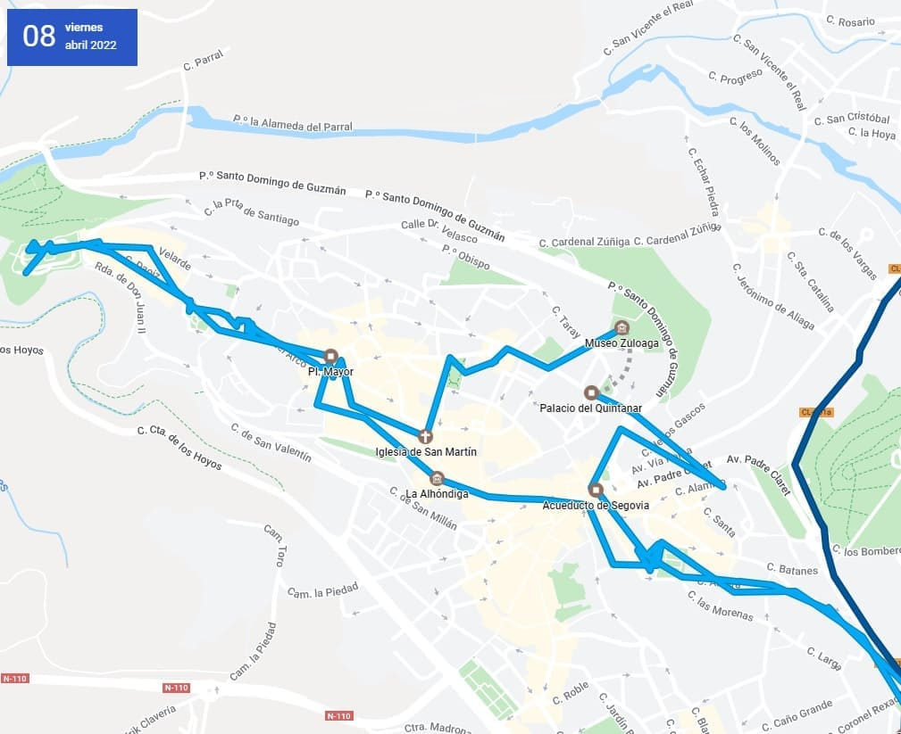
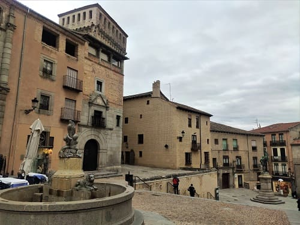
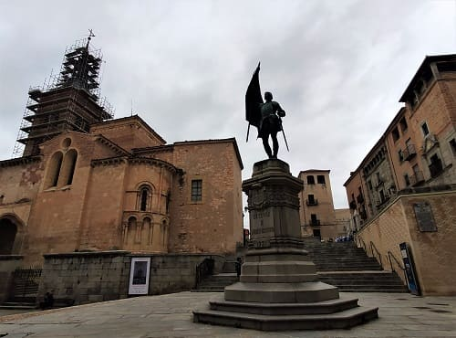
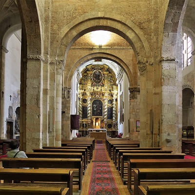
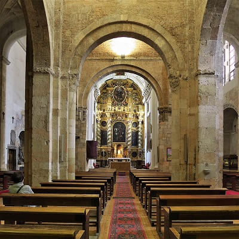

The first day I decided before going to Valladolid to visit one of the jewels that the Spanish Royal Family has left us, the Granja de San Ildefonso palace. This palace gives its name to the place called Royal Site of San Ildefonso. To get there from Toledo or Madrid, you have to pass the Sierra de Madrid and Navacerrada, where one of the ski resorts most visited by Madrid residents is located.
It was ordered to be built by Felipe V, the first Bourbon king raised in France, grandson of King Louis XIV of France. He was hunting in company in the mountains of the Sierra de Guadarrama and he would like it so much that he would decide to build his summer palace there. Right where the hermitage of San Ildefonso was located, for which he bought the farm-hermitage, the hospedería and surrounding land from the community of monks of El Parral. The king who, it seems, wanted to imitate the life of Felipe II, ended up showing that he had been educated at the court of Louis XIV and what could have been another Palace of El Escorial, ended up being a copy of Versailles.
The layout and design of the gardens corresponds to the classic French style, whose creator was Le Nôtre, author of the gardens of Versailles.
The interior of the Palace is deeply baroque with beautiful frescoes on the ceilings and gold polychrome wood moldings. Also noteworthy are the impressive glass lamps made in the La Granja Royal Glass Factory.
The palace can be visited but inside, as in the collegiate church, they do not allow you to take pictures, so unless you have your mobile phone and you are recording, you will not be able to take a souvenir of the place with you. The most interesting rooms are the Hall of Classical Heroes which is full of alabaster and bronze statues, the Hall of the Ladies, full of tapestries from the time of Charles V of Dutch origin and the Royal Room.
In addition to the palace, an attached collegiate church of great value was built and there is the Royal Glass Factory.
After eating, I would go on my way to Segovia.

Parking on the outskirts very close to the first stone of the Aqueduct within the city that has the aqueduct carved on the outside. The Segovia aqueduct is a Roman aqueduct that carried water to the Spanish city of Segovia until 1973. Its construction dates from the beginning of the 2nd century AD. C., at the end of the reign of Emperor Trajan or beginning of Hadrian's. The most visible part, and therefore famous, is the archway that crosses the Plaza del Azoguejo, in the city
From the arrival in the city to the Plaza de Día Sanz there are 75 simple arches and then 44 double arches (that is, 88 arches), followed by another four simple arches.
From there I will continue walking to the Postigo del Consuelo. I went up Calle de San Juan, on the way to Plaza del Conde Cheste. In this square are the Casa de las Cadenas, the Casa de los Marquises de Lozoya, the niche of the Virgen de los Remedios and further towards the center the Palacio del Quintanar. This palace can be visited and usually puts on exhibitions, in this case there was an exhibition of photographs of different Italian monuments.
Pulling further towards the outskirts we find another important museum in Segovia, the Zuloaga museum, which is inside the old church of San Juan de los Caballeros >.
Once I have seen this, I will head towards another of the most important points in Segovia, the San Martín square and the Medina del Campo square, which are attached. On the way I will pass through the Plaza del Doctor Laguna seeing different exteriors of palaces such as the palace of San Facundo or the tower of Arias de Dávila. Nearby is the Esteban Vicente museum and the Casa de los Mesa.


In this square of Medina del Campo is one of the most important and oldest churches dating from 1100, the church of San Martín.
It is a beautiful Romanesque-style church, with an entrance full of arches decorated with carved figures on the capitals and a back door with the carvings of the 4 evangelists. One of the few Romanesque churches preserved in the center of a provincial capital since many were destroyed to build others with more modern styles. Inside it has a more modern, neoclassical part with a baroque altarpiece.
 

Very close we already have one of the two most touristic points of the city, the Plaza Mayor that houses the town hall and the cathedral nearby. The other point is the Plaza del Alcázar that I would visit later.
In it we also have the church of San Miguel, in the Gothic style and from the same period as the cathedral.
Segovia Cathedral has late Gothic style, specifically it is the newest Gothic-style cathedral in Spain since it began to be built in the 16th century when the Renaissance style was already in use in Europe. Like important cathedrals in Spain such as Toledo, Berruguete would also work here on the sculptures and Jose de Churriguera as well as Gregorio Fernández, great sculptors of that time. In addition, the first book printed in Spain is preserved, the Sinoidal de Aguilafuente, which is exhibited in the cathedral museum. Near the cathedral is the church of San Andrés, which has a valuable baroque altarpiece. This church would originally be a mosque and it is clearly seen in the arches of its tower, a possible minaret.
© 2016 - All Rights Reserved - Designed by Sergio López Martínez
El sitio se mantiene gracias a la publicidad, por favor Desactiva Adblock para seguir navegando
He desactivado Adblock![[Valid RSS]](https://www.onepointsync.com/wp-content/uploads/2016/08/valid-rss-rogers.png "Validate my RSS feed")